case 03 · practikum
Practikum
Practikum. The platform behind an Egyptian learning brand.
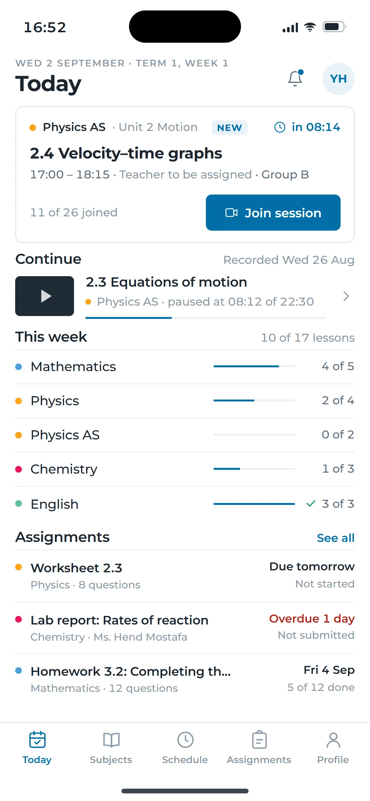
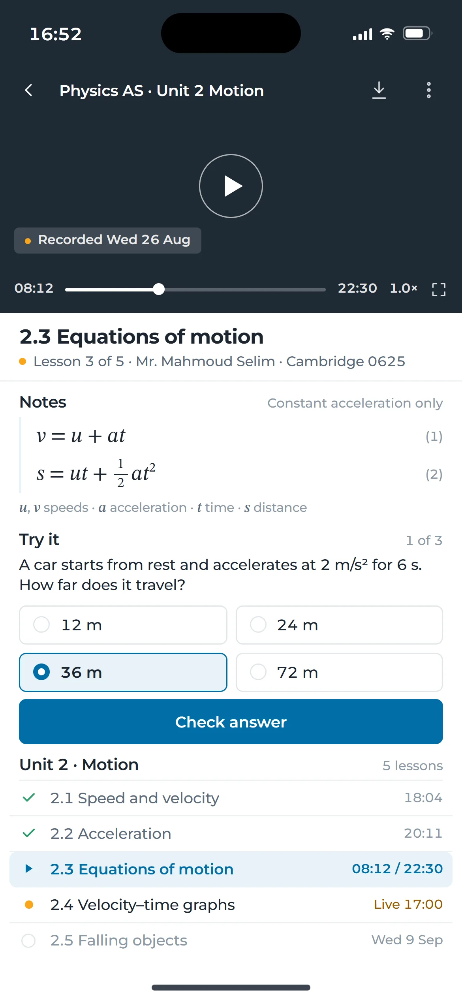
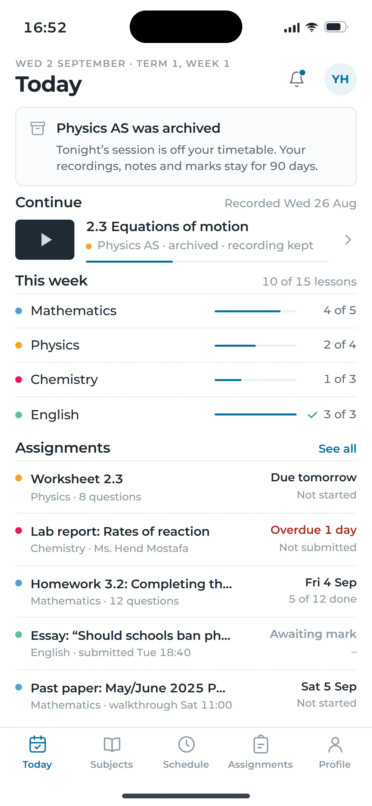
movement 01 · two surfaces, one truth
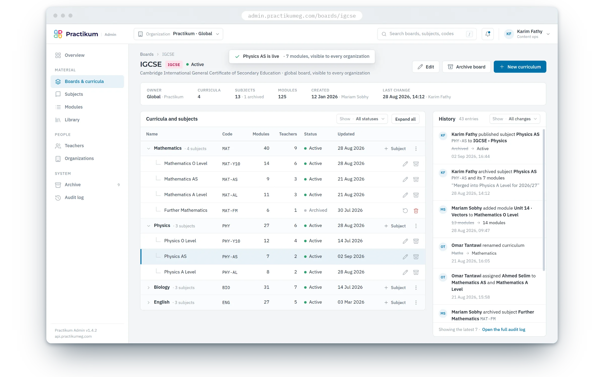
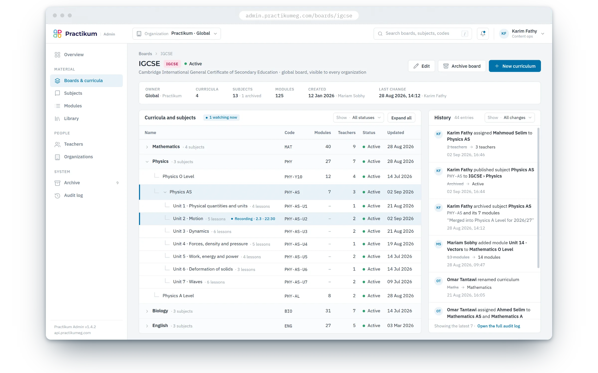
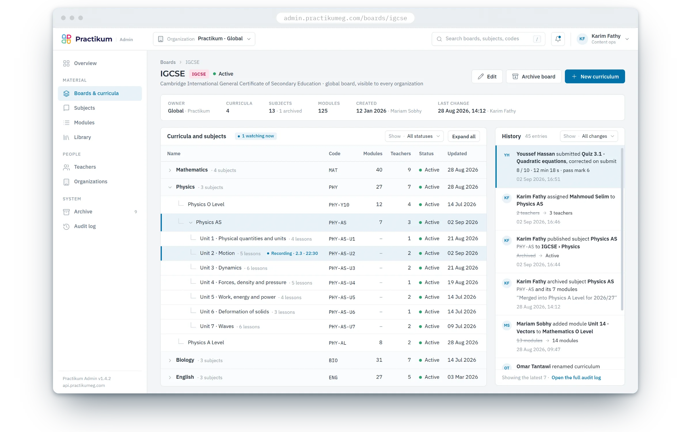
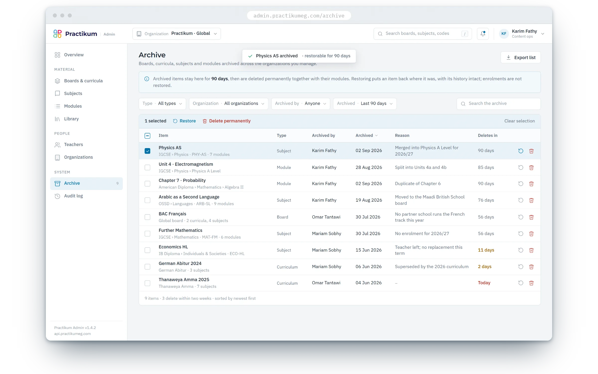
admin · console-
01
console · published
The console publishes Physics AS, and the session lands on the student's day before he reloads.
-
02
console · teacher assigned
Mr. Mahmoud Selim is put on the subject, and his name appears on the very card the student is looking at.
-
03
student · recording opened
He opens the recorded lesson 2.3, and the console's module row shows that recording being watched.
-
04
quiz · corrected on submit
He submits the quiz, it is marked 8 out of 10 on the spot, and the console's history keeps the whole record.
-
05
console · archived
The console archives the subject, so it leaves the student's timetable and its recordings stay for ninety days.
the story
One domain model behind two surfaces: a console that edits the taxonomy, and an app that reads it live.
about the client
Practikum is a Cairo ed-tech for the international-school track (IGCSE, AS, A Level): live classes, recordings, weekly quizzes, a parent account, and a back office that keeps the academic taxonomy straight.
the challenge
- 01
One taxonomy for many schools: organization, board, curriculum, subject, module, with archive, restore and history.
- 02
A student app and an admin console that must never disagree.
- 03
Live sessions and instant correction on one API.
the approach
One domain model behind two surfaces: the admin edits the taxonomy, the student app reads it live; exams and quizzes are corrected the moment they are submitted; live sessions ride a WebSocket.
my role
I built the platform's core services: questions and exams, quizzes and instant correction, students, parents and users with their roles, lessons and recordings, attendance and grades, on the REST and WebSocket API that serves both the student app and the admin console.
movement 02 · a student's day
A student's day
The app is a day plan, not a dashboard: tonight's session, the lesson he paused, what is due, and a quiz corrected the moment it was submitted. Everything is time ordered, and one screen carries one decision.
-
16:52
Today · the session is eight minutes away
-
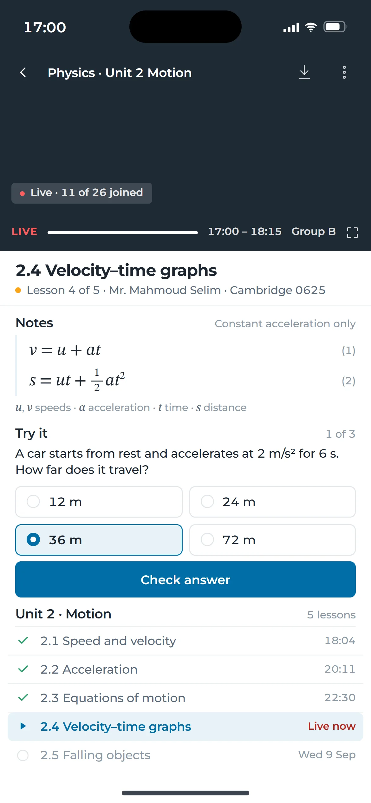
17:00
Live lesson · eleven of twenty six joined
-
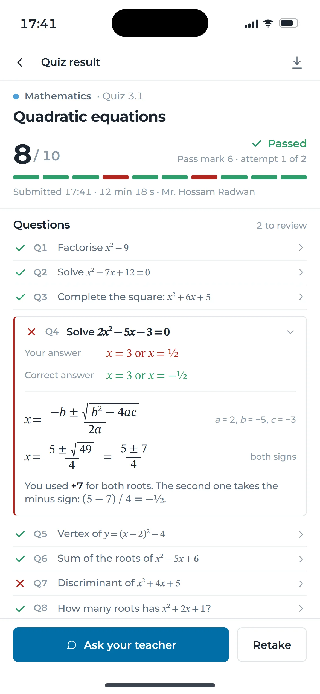
17:41
Quiz corrected · eight of ten, on submit
Two screens. One truth.
Mathematics Physics Chemistry English
movement 03 · behind the desk
Behind the desk
Nothing is deleted. An archived curriculum stays restorable for ninety days, with the reason, the person and the time; the history keeps every change, what it was and what it became.
boards and curricula
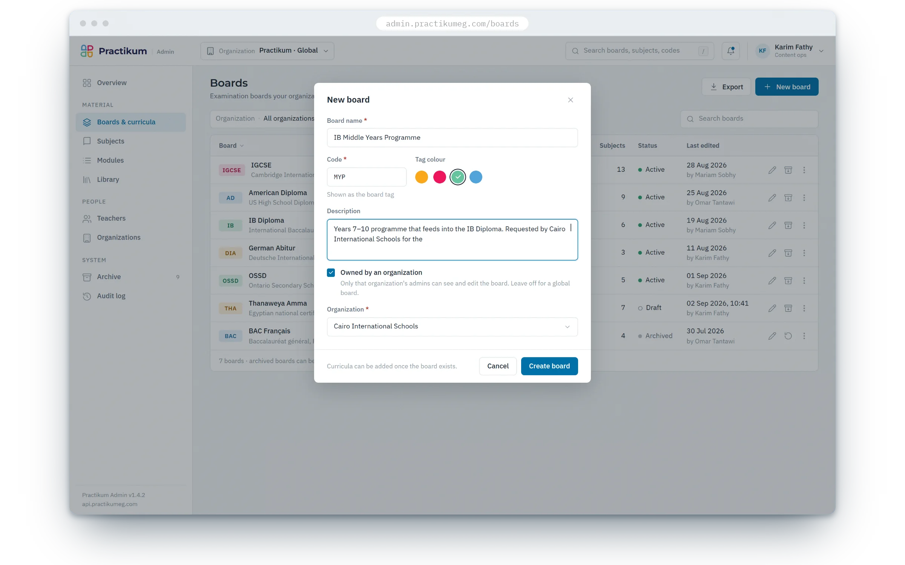
archive
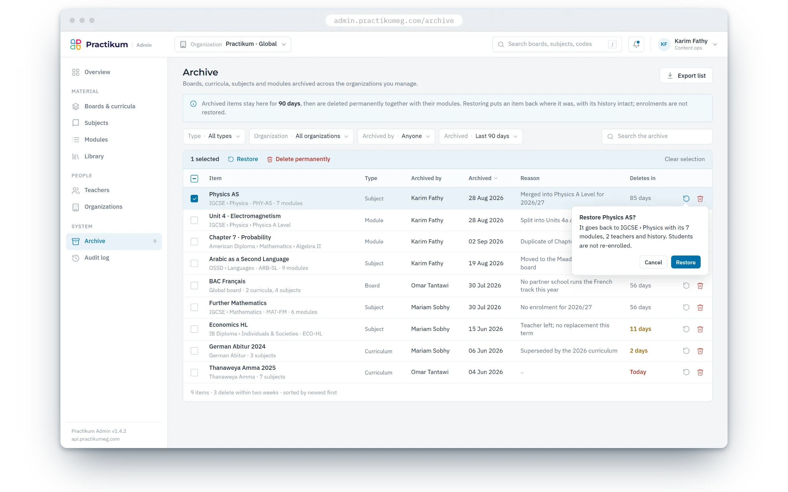
student · the same tree on the web
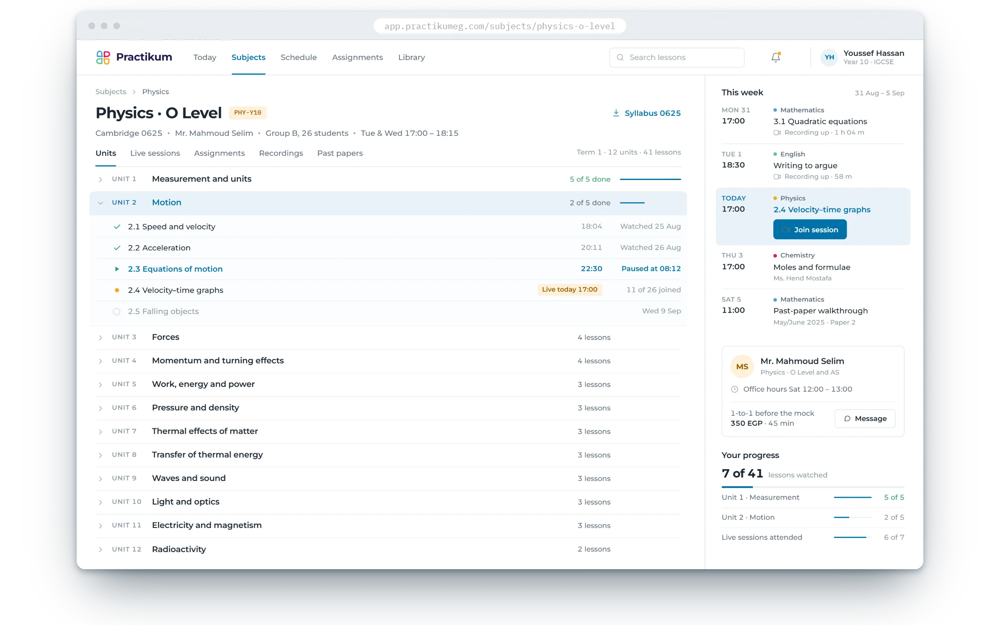
90 days to restore, then it goes, and every change keeps its before and after
/ outcomes
students
on the platform
parents
one account per family
staff
teachers and content ops
case 03 · complete
the field of the next chapter floods the screen